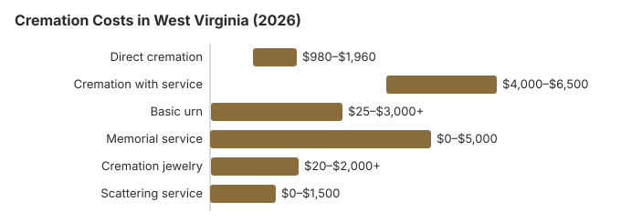

Cremation Costs in West Virginia (2026)
West Virginia still leans toward burial: about 48% of deaths here end in cremation, 15.4 points under the 63.4% national rate NFDA projected for 2025. For the families who do choose it, the saving is large, about $4,700 against a traditional burial by our estimate. Below are the West Virginia prices, who signs off on a cremation, and what to ask a provider before you agree to anything.
Cremation Choices in West Virginia
Direct Cremation
- The least expensive choice a West Virginia provider sells
- There is no viewing or service first
- The body goes straight to the crematory
- The family gets the ashes back
- A memorial can follow whenever the family is ready
Cremation with Service
- A full funeral takes place before cremation
- Visitation can be included
- The service may be at a church or the funeral home
- A basic urn usually comes with it
- Feels much like a conventional funeral
A West Virginia Cremation, Priced Out
| Item | West Virginia estimate | Low to high |
|---|---|---|
| Direct cremation | $1,400 | $980 – $1,960 |
| Cremation with service | $5,000 | $4,000 – $6,500 |
| Basic urn | $50 – $300 | $25 – $3,000+ |
| Memorial service | $500 – $2,000 | $0 – $5,000 |
| Cremation jewelry | $50 – $500 | $20 – $2,000+ |
| Scattering service | $200 – $600 | $0 – $1,500 |
About these figures: every West Virginia number here comes from our cost model rather than from crematories we called, and none is a quote. Our our method is laid out step by step, with a disclaimer.
State sources: W. Va. Code § 9-5-18; WV Funeral Home Director Handbook (Indigent Burial).

Before You Sign for Cremation in West Virginia
Three things to settle with a West Virginia provider first:
- Start with the General Price List. Its direct cremation line has to spell out what is included, and a fair West Virginia price takes in transport, the cremation and a simple container for the ashes.
- A casket is never required. The FTC Funeral Rule (16 CFR 453.3(b)) obliges any West Virginia provider that sells direct cremation to accept an unfinished wood box or another alternative container.
- Ask three practical questions before signing: when the ashes will be ready, whether they are delivered or must be picked up, and whether a certified death certificate is included.
Spending Less on a West Virginia Cremation
Two ways to bring a West Virginia cremation bill down:
- Price three providers. Ask at least three West Virginia providers for written General Price Lists and compare their direct cremation lines.
- Look at cremation societies. Nonprofit cremation societies work in several West Virginia metro areas, and on direct cremation they often charge $300 to $900 less than a full-service funeral home while meeting the same state rules.
Burial Tradition and Cremation in West Virginia
At 48%, West Virginia's cremation rate sits below the national figure, in part because burial is a long church tradition across much of the state. Where a family's faith allows cremation, the money involved is real: in West Virginia the gap against a traditional burial is usually $4,700 or more.
Cremation Resources
- Funeral Consumers AllianceNonprofit advocacy: compare cremation providers
- Cremation Jewelry GuideMemorial keepsakes and remembrance options
- Cremation vs. Burial CostsSide-by-side cost comparison
- Pet Cremation CostsOptions and prices for pet cremation and memorials
- Final Expense InsuranceCoverage options to help pay for cremation costs
Compare Funeral Costs
- Average Funeral Cost in 2026National cost breakdown with real prices
- Cremation vs. Burial Cost ComparisonSide-by-side price comparison to help you decide
- Funeral Cost BreakdownEvery line item explained: know what you're paying for
- Cheapest Funeral OptionsLower-cost alternatives, with typical price ranges
- Direct Cremation: Most Affordable OptionNFDA 2023 median $2,645 with a family-supplied container (latest available)
- How to Compare Funeral PricesStep-by-step guide to getting the best price
Frequently Asked Questions
What does a cremation cost in West Virginia?
By our estimate, a West Virginia cremation costs anywhere from $1,400, for direct cremation, to $5,000 when a full funeral comes first.
What kinds of cremation can a West Virginia family choose?
There are three usual options. Direct cremation, about $1,400 in West Virginia, has no viewing or service: the body is cremated and the ashes go back to the family. Cremation with a memorial afterward falls in between. A traditional funeral followed by cremation is about $5,000, or $3,600 more than direct cremation.
Does West Virginia have specific rules for cremation?
West Virginia law does not make families wait a set number of hours. What it spells out is who decides: before a body goes to a funeral director or crematory operator, the decedent's own wishes in a will, advance directive or preneed contract come first, then a surviving spouse (unless a divorce petition was pending), then someone the decedent named in a signed, notarized writing, and only after that the next of kin. Nobody may hold that designation for more than one nonrelative at a time (W. Va. Code § 30-6-22). For the exact West Virginia citation, the funeral-director question and who takes complaints, see the cremation rules and help section lower on this page.
Where can ashes be scattered in West Virginia?
It depends on where. Get the landowner's permission on private land and check the rules of any park or public site first. Many West Virginia families choose a niche in a columbarium or an urn burial instead, and some hold back a small portion for a keepsake.
Why are more West Virginia families choosing cremation?
Fewer West Virginia families choose cremation than in most states, about 48% here against the 63.4% NFDA projected nationally for 2025. Those who do usually cite cost (direct cremation runs about $4,700 below a traditional funeral in West Virginia), the freedom to hold a memorial on their own schedule, and environmental concerns, as attitudes toward burial have shifted nationally.
How long does a West Virginia cremation take?
Most West Virginia cremations are finished within 4 to 10 days. Direct cremation ($1,400) is quickest since nothing has to be scheduled first; West Virginia sets no fixed waiting period, so the cremation permit is the main wait (W. Va. Code 30-6-21).
Can a West Virginia family have a funeral before the cremation?
Yes. By our estimate a West Virginia funeral with the body present, followed by cremation, costs about $5,000, with most quotes between $4,000 and $6,500; direct cremation is about $1,400.
Two papers must be in place first: written permission from the next of kin and a cremation permit from a medical examiner or coroner (W. Va. Code 30-6-21). The funeral home can arrange both while the family plans the service, and renting a casket for the viewing saves buying one for a single day.
More for West Virginia
West Virginia's cremation permit and the 21-day rule
Whoever arranges a cremation in West Virginia must get a permit from the Chief Medical Examiner, the county medical examiner or the county coroner where the death happened. The official reviews the death certificate first, and the requester pays a fee set by the Chief Medical Examiner; skipping the permit is a misdemeanor with a fine of at least $200 (W. Va. Code § 61-12-9; checked October 29, 2026).
- Deadline for the crematory: once it has the body, a crematory has to perform the cremation within the time the contract sets, or within 21 days if the contract is silent.
- Paid before printing: the permit is requested through the state's electronic death registration system, WV DAVE, and has to be paid for before it can be printed.
West Virginia cremation oversight and public help
Cremation providers in West Virginia are licensed by the West Virginia Board of Funeral Service Examiners, which takes license questions and complaints at 304-558-0302.
The Funeral Consumers Alliance does not count West Virginia among the nine states that require a funeral director. Even so, no crematory in the state will start without the death certificate, the cremation permit and the next of kin's signed authorization. There is no waiting period; what the law requires is written next-of-kin permission and a cremation permit from a medical examiner or coroner (W. Va. Code 30-6-21).
When money is short
West Virginia's Indigent Burial program pays a $1,000 rate for a direct cremation, but only while the resources and family payments the funeral home receives stay below $2,200; the first $1,200 of those does not count against the rate. (Source: W. Va. Code § 9-5-18; WV Funeral Home Director Handbook (Indigent Burial).) The $255 Social Security lump sum goes only to an eligible spouse or child and must be claimed within two years of the death.
A veteran keeps the cemetery benefit after cremation: an urn can be interred in a national cemetery at no charge. West Virginia options include West Virginia National Cemetery (304-265-2044) and the Donel C. Kinnard Memorial State Veterans Cemetery (304-746-0026). See cem.va.gov.
Next steps in West Virginia
- Ask two or more West Virginia providers for written direct cremation prices and check what each one covers.
- Find out who will sign the cremation permit and how soon, so the memorial date holds.
- Tell the DoHS worker about any family money paid to the funeral home; more than $1,200 reduces the $1,000 cremation rate.
- Report a provider that misstates its prices to the Board at 304-558-0302.